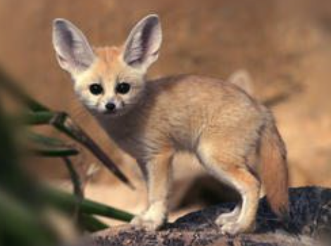

"The odd ones"

Odd pets are non-traditional animals kept in homes, including mammals like the capybara, sugar glider, and fennec fox, as well as reptiles such as the bearded dragon, and even insects like hissing cockroaches. Other peculiar options include hedgehogs, pygmy goats, axolotls, and tarantulas. When considering an odd pet, it's essential to research their unique needs, potential safety risks, and the legal requirements for ownership.